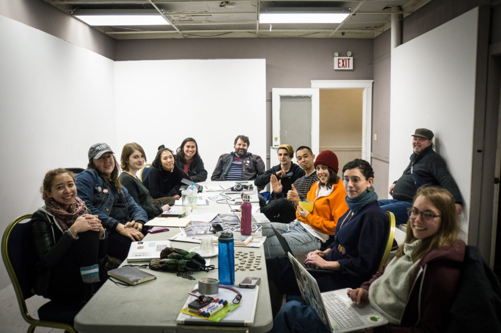

BRAIN Arts Organization
From January 2018 to May 2018, I interned for
BRAIN Arts Organization, a 501(c)(3) local volunteer-run music and arts nonprofit. BRAIN Arts Organization runs four legs to its operation: the Boston Hassle website; Boston Hassle shows; a bi-monthly flea market: The Black Market; and a monthly counter-cultural newspaper: The Boston Compass. The main leg I worked within was the show programming of
Boston Hassle Shows. As an intern, I corresponded with numerous artists, venues, and internal BRAIN Arts members to bring shows to fruition.
notes from the crew, April 2018